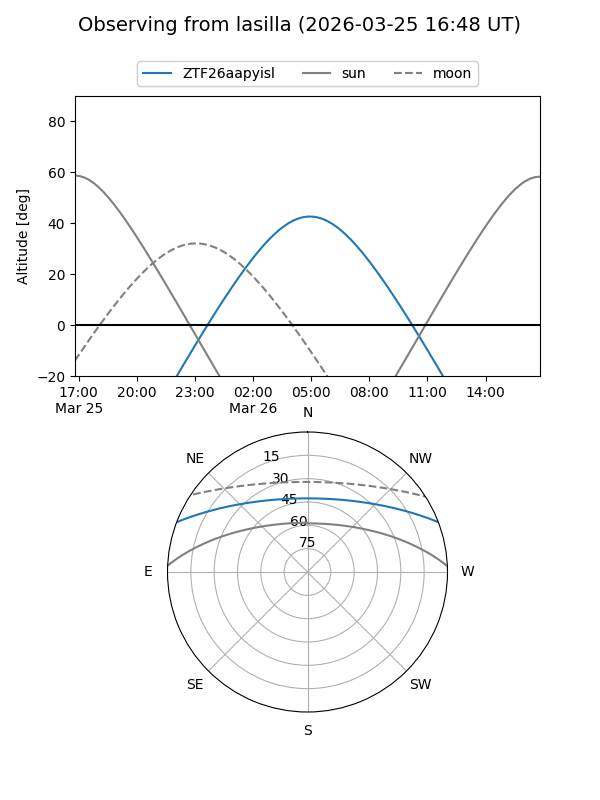
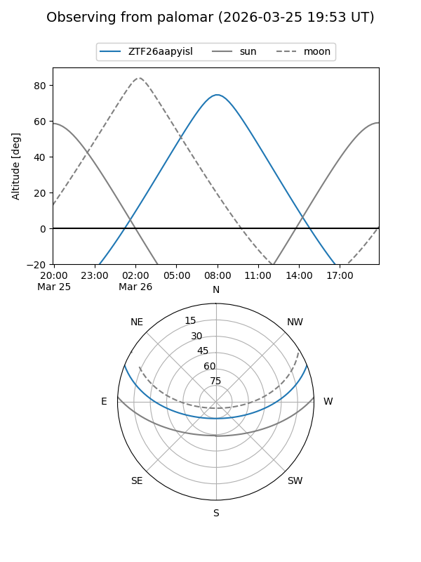

ZTF26aapyisl
Target ZTF26aapyisl at 2026-03-26 08:59
Aliases and brokers:
FINK: link
Lasair: link
ALeRCE: link
alt names
ZTF26aapyisl (ztf,fink_ztf)
Coordinates:
equatorial (ra, dec) = 186.5822,+18.22953
equatorial (HMS+DMS) = 12:26:19.72,+18:13:46.32
galactic (l, b) = (268.6053,+79.38745)
Flags:
Photometry:
last ztfg=19.95
1 ztfg detections
Lightcurve
Visibility


Additional plots